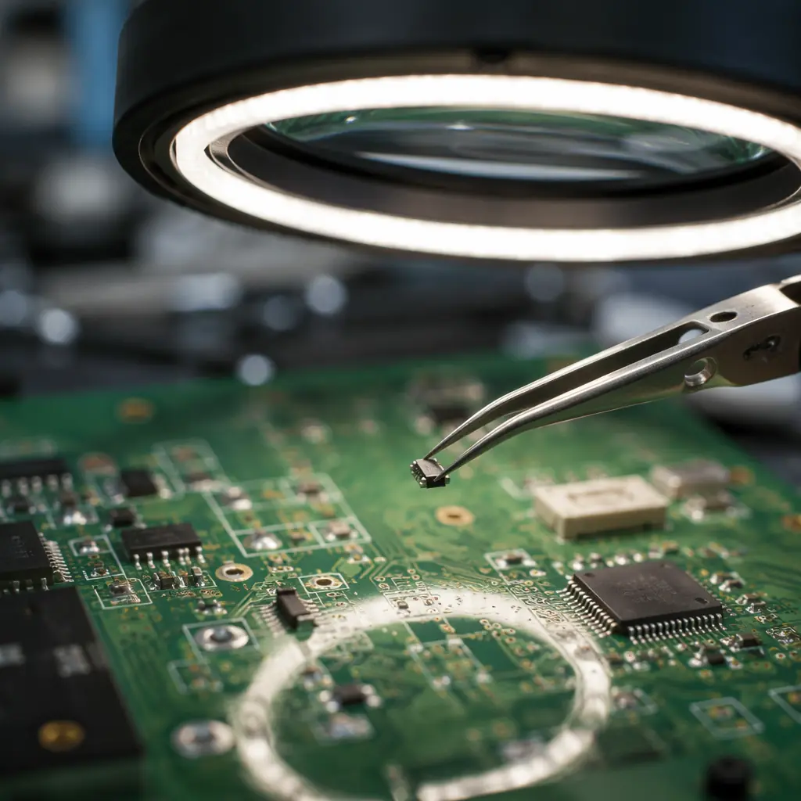

Every hardware engineer eventually faces the same dilemma: a $60 BGA on a $400 prototype board has failed, and you have exactly one shot to replace it without destroying the board. Rework is the highest-risk operation in electronics assembly — a single lifted pad, a single solder bridge under a BGA, or a single overheated via can turn a repairable board into scrap. Yet with the right technique, most common failures — damaged BGAs, lifted pads, failed through-hole components, conformal-coated assemblies — are repairable with high first-pass success rates. This guide covers the four most common rework scenarios, the IPC-7711/7721 standards that define acceptable repair, and the cost-break analysis that tells you when repair is cheaper than respin.
At Huaxing PCBA, our rework station handles 200–400 rework operations per month across prototype, NPI, and production boards. We train every rework technician to IPC-7711 Class 3 standards — the same certification required for aerospace and medical device rework. Here's the practical knowledge from thousands of rework cycles, distilled into actionable procedures.

BGA Rework — Reballing vs Replacement
BGA rework is the most technically demanding repair because every solder joint is hidden under the component body. You cannot visually inspect the joint during reflow, and a single open or short under a 1,000-ball BGA turns the entire operation into a failure. The decision tree: is the BGA itself faulty (replace the component), or has the solder joint degraded (reball and reattach the same component)?
BGA Removal — Profile Before You Pull
The removal profile is the most critical step in BGA rework. Unlike SMT reflow, where the entire board follows a controlled oven profile, BGA removal uses localized heating from a nozzle aimed only at the component. The challenge: the BGA body acts as a thermal insulator — the solder balls underneath can be 20–40°C cooler than the package top surface. Use a thermocouple embedded in a sacrificial board (same stackup, same BGA) to profile the actual solder joint temperature. Target: 217°C liquidus for 45–75 seconds (SAC305 lead-free). Undershoot = pads rip out with the BGA. Overshoot = popcorn cracking in the package, delamination in the PCB. Our BGA assembly guide covers initial placement and reflow profiling for comparison.
Site Preparation — Pad Cleanup Without Damage
After BGA removal, the pads carry residual solder that must be leveled before placing a new component. The standard tool: solder wick (desoldering braid) with a temperature-controlled iron at 315–340°C. Critical technique: do not press the wick into the pads — the capillary action of the braid alone should lift the solder. Pressing flattens or lifts the copper pad from the laminate. After wicking, inspect every pad under 10–20× magnification for pad lifting, solder mask damage, or residual solder spikes that would prevent the new BGA from sitting flat. For PCB testing, X-ray inspection after BGA placement is mandatory — there's no other way to verify joint quality.
Reballing — When to Save the BGA
If the BGA itself is functional but has been removed for board-level repair (e.g., to access a damaged trace underneath), reballing saves the component cost. Process: clean residual solder from BGA pads with wick, apply flux, position a stencil aligned to the BGA pads, squeegee solder paste through the stencil apertures, and reflow the BGA alone (component-side up) to form new solder balls. Reballing requires a BGA-specific stencil — the aperture pattern must match the BGA ball map exactly. A reballing stencil costs $30–$80 (far less than a new BGA). Success rate on experienced rework: 90–95% for ≤0.8mm pitch, 70–85% for 0.5mm and below. For low-volume PCB assembly, reballing is routine when expensive FPGAs or ASICs need to be transferred between prototype board revisions.
Cost Decision Rule: If the BGA cost exceeds $150 AND the rework technician is IPC-7711 certified, attempt reballing. If the BGA cost is under $50, replace the component — the labor cost of reballing (30–45 minutes) exceeds the component cost. For BGAs under 0.5mm pitch, replacement is almost always the better choice — the reballing failure rate makes it false economy.
Lifted Pad Repair — Reconstructing a Connection from Scratch
A lifted pad — where the copper pad separates from the laminate, usually from excessive heat or mechanical stress during desoldering — is the nightmare scenario. The trace that connected to that pad still exists, but there's no landing surface for the replacement component. IPC-7711 defines four repair methods depending on pad damage severity.
Method 1: Epoxy Bond the Original Pad (Least Invasive)
If the pad lifted cleanly without tearing, bond it back with high-temperature epoxy (rated to ≥300°C). Apply epoxy under the lifted pad with a fine-tip applicator, press flat with a Teflon-tipped tool (epoxy won't bond to PTFE), cure at 120–150°C for 15–30 minutes. After curing, verify electrical continuity from the pad to its via or trace. This method preserves the original pad geometry and is the preferred repair when possible. Our PCB supplier audit guide covers how fabricators should handle pad adhesion testing.
Method 2: Lap Solder a Replacement Conductor (Most Common)
When the original pad is destroyed or missing, fabricate a replacement conductor from copper foil (0.035–0.07mm thickness, matching the original copper weight). Cut a small rectangle larger than the original pad, bond it to the board surface with high-temperature epoxy at the pad location, overlap the foil onto the exposed trace by ≥2× the trace width, and lap-solder the overlap joint. After soldering, trim excess foil with a scalpel. The replacement pad must be the same diameter as the original — too small and the component won't solder properly; too large and it may short to adjacent pads. For IPC Class 3 assemblies, this repair requires jumper verification and documentation.
Method 3: Jumper Wire to an Accessible Node (Last Resort)
When the pad and its connecting trace are both destroyed and there's no surface to bond a replacement pad, run a 30–36 AWG insulated jumper wire from the component lead to the nearest accessible node on the same net — typically a via, test point, or another component pad. Secure the wire with epoxy dots every 5–10mm and at both termination points. This is the least elegant repair but the most reliable when pad reconstruction isn't viable. For IPC Class 3, jumper wires must be documented on the rework traveler and may be limited to a maximum of 3 per board depending on the customer's repair specification.
Conformal Coating Removal — The Obstacle Before the Repair
Conformal coating — acrylic, silicone, polyurethane, or parylene — protects PCBs from moisture, dust, and chemical exposure. But it also prevents access to the components and pads you need to rework. Removing it without damaging the board underneath is as critical as the rework itself.
| Coating Type | Removal Method | Tooling | Risk to Board |
|---|---|---|---|
| Acrylic (AR) | Solvent (acetone, MEK, or proprietary stripper) | Cotton swab, acid brush | Low — dissolves easily |
| Silicone (SR) | Mechanical peel + solvent cleanup | Tweezers, micro-brush | Moderate — mechanical stress on pads |
| Polyurethane (UR) | Thermal ablation or aggressive solvent | Hot-air pencil, methylene chloride | High — heat and chemicals can damage board |
| Parylene (XY) | Micro-abrasion or plasma etching | Micro-abrader, oxygen plasma | High — specialized equipment required |
| Epoxy (ER) | Not removable — destructive only | Dremel, scalpel (sacrificial) | Very High — pad damage almost certain |
Field Rule: Acrylic and silicone coatings are rework-friendly — specify these for prototype and NPI boards where rework is expected. Polyurethane and parylene are selected for environmental protection, not reworkability — expect higher rework failure rates. Epoxy coating means the board is non-repairable by design; budget a spare board.
For acrylic removal, apply solvent with a cotton swab to the specific component area only — don't flood the board. The coating will soften within 30–60 seconds. Gently wipe away with a clean swab, reapplying solvent as needed. After rework, reapply conformal coating to the repaired area using a brush-on or aerosol version of the same coating chemistry. For conformal coating selection and application, our dedicated guide covers coating types, IPC-CC-830 standards, and masking techniques.
Through-Hole Rework — Desoldering Without Pad Damage
Through-hole components — connectors, electrolytic capacitors, transformers — are mechanically anchored in plated holes, making them harder to remove than surface-mount parts. The solder fills the entire barrel, and the component leads extend through the board.
Desoldering Pump Method (Manual, Low-Cost)
Heat the joint to 315–340°C with a soldering iron, wait for full solder melt (2–3 seconds after visible liquification), then trigger the desoldering pump nozzle directly over the pad. The vacuum should remove 80–95% of solder in one shot. Repeat once if needed. For multi-pin connectors, work pin by pin — attempting to heat all pins simultaneously with a solder pot is industrial-scale and risks board warpage. See our wave vs selective soldering comparison for how these joints are made in production.
Desoldering Station Method (Professional)
A vacuum desoldering station combines a heated hollow tip with continuous vacuum. Place the tip over the component lead (the tip ID must match the lead diameter), wait for solder melt, and activate vacuum. The solder is pulled through the hollow tip into a collection chamber. This method is faster and cleaner than manual pumps, reduces pad thermal stress by 40–60% (faster heat application = less heat conducted into the board), and is the standard for professional rework. For thermal management considerations during rework, localized heating always beats prolonged board-wide heating.
The Cost-Break Analysis — When to Rework vs When to Respin
Rework is not always cheaper than building a new board. The analysis must account for technician labor, rework success probability, test/validation after rework, and the risk of latent damage from the rework process itself.
| Scenario | Board Value | Rework Labor | Success Rate | Expected Cost | Decision |
|---|---|---|---|---|---|
| Prototype (qty 3), $400/board, BGA swap | $400 | $120 (2 hrs) | 85% | $141 expected | Rework — cheaper than $400 respin |
| Production (qty 500), $60/board, lifted pad | $60 | $80 (1.5 hrs) | 75% | $107 expected | Replace — rework costs > new board |
| Lead-time-critical, $800/board, any fault | $800 | $200 (3 hrs) | 70% | $286 expected | Rework — 4-week lead time loss > rework cost |
The general rule: rework is economically justified when (rework labor ÷ success rate) < (replacement board cost + missed opportunity cost). For prototypes and NPI boards where replacement lead time is 2–4 weeks, the opportunity cost of delay (missed testing, slipped schedule) dwarfs the rework labor — rework almost always wins. For high-volume production where boards cost under $100, replacement is usually cheaper. Our prototype vs production cost guide has the full economics.
IPC-7711/7721 — The Rework Standard You Should Reference
IPC-7711/7721 ("Rework, Modification and Repair of Electronic Assemblies") is the industry standard for acceptable rework procedures. It defines five procedure levels — from simple component removal to complex laminate repair — with specific tooling, materials, and inspection criteria for each. When you send a board for rework, specify: "Rework per IPC-7711 Class 3". This tells the rework technician the expected quality level (Class 3 = high reliability, same as aerospace/medical) and holds them to documented procedures rather than "whatever works." For IPC standards comparison, our guide covers the full hierarchy from IPC-A-600 to IPC-J-STD-001.
Summary: Rework Is a Skill, Not a Gamble
PCB rework succeeds or fails on three factors: thermal profiling (know the actual solder joint temperature, not the nozzle setting), mechanical precision (tweezer and micro-brush control under magnification), and honest cost-break analysis (don't spend $200 in labor to save a $60 board). The decision to rework should be data-driven, not emotional — and the execution should follow documented procedures, not improvisation.
At Huaxing PCBA, our rework technicians are IPC-7711 certified and operate under documented work instructions for every rework type we handle. For boards that are beyond economical repair, our incoming quality inspection process catches these failures at the fabrication level before they reach assembly. If you have boards needing professional rework — or want to understand whether rework is worth it for your specific situation — our quick-turn service includes rework assessment and execution, or contact us with photos of the damage for a rework feasibility evaluation within 24 hours.